SpriteKit
Drive With Friends was built with the SpriteKit framework from the Swift programming language and it is targeted to the iOS mobile platform. In the SpriteKit framework, SKSpriteNode virtually represents physical objects in the physical world. SKPhysicsBody is an object which adds physics simulation to an SKSpriteNode. An SKPhysicsBody contains properties like isDynamic, allowsRotation, mass, friction, restitution, linearDamping and angularDamping, etc. These properties are crucial to our car physics as it defines how the car(an SKSpriteNode) should react in the ‘physical world’.
Finite State Machine

When the game starts the players will be lead to the select room view. If the player selects the room, he/she will be forwarded to the “Select Team” state. At this stage, the player can either select a team and wait for other players to join the same room or quit to the room and go back to the “Select Room” state. After all 4 players have entered the room and joined a team the game will proceed to the start game state. In this state, a player can choose to quit the game, this will force other players to quit the current game and back the room selection. This state machine design allows players to exit at any point of the system.
NodeJs
Our NodeJS hosts the server for our game. We use Socket.io to connect the server with iOS app Swift client. Socket.io enables the real-time bidirectional event-based communication.
Our NodeJs server handles room management, record status of players, auto-delete vacant rooms, and disconnect user sessions. During a game session, we have MASTER and SLAVE devices for each group. MASTER send its controls and car’s position by by “Control” and “State” socket channels respectively, and SLAVE only send its controls by “Control” socket channel 60 times per second. Server broadcasts the control to the devices that in the same team once server receives “Control” signal, and broadcasts the car states to the devices that in the same room when server receives “State” signal. All of devices render its car based on the signal received from server.
REFERENCES
1.
Y. Zhao, "A Framework for Collaborative Applications using a Client-Server Network With Supernodes", Dspace.library.uvic.ca, 2018.
2.
F. Tsai, W. Han, J. Xu and H. Chua, "Design and development of a mobile peer-to-peer social networking application", Expert Systems with Applications, vol. 36, no. 8, pp. 11077-11087, 2009.
3.
Ahn, Y., Kim Cheng, A., Baek, J. and Fisher, P. (2009). A multiplayer real-time game protocol architecture for reducing network latency. IEEE Transactions on Consumer Electronics, 55(4), pp.1883-1889.
4.
C. Pete Mastin, "How latency is killing online gaming", VentureBeat, 2018. [Online]. Available: https://venturebeat.com/2016/04/17/how-latency-is-killing-online-gaming/.
"Getting Raw Accelerometer Events | Apple Developer Documentation", Developer.apple.com, 2018. [Online].
5.
"Socket.IO", Socket.io, 2018. [Online]. Available: https://socket.io/. [Accessed: 13- Jun- 2018].
6.
"SpriteKit | Apple Developer Documentation", Developer.apple.com, 2018. [Online]. Available: https://developer.apple.com/documentation/spritekit. [Accessed: 01- Aug- 2018].